Elke donderdag
Pizzadag
Alle pizza's € 12,50. Afhalen kan ook.
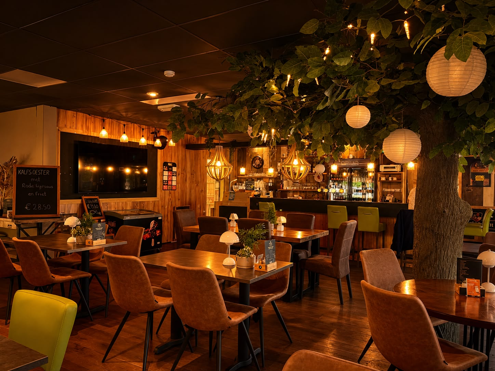
Genieten aan de Maas
De smaak van samen genieten
Lunch, diner of gewoon een goed glas met vrienden. Aan de dijk in Andel.
Onze plek aan de Maas
Maas en Vrienden ligt midden in Andel, een rustig dorp aan de Maas in het Land van Heusden en Altena. Tussen de dijken en de polders gaat alles hier net wat rustiger. We koken met verse ingrediënten en zorgen dat je je meteen thuis voelt.
Kom je net binnen na een frisse wandeling over de dijk? Wil je opwarmen met een goed glas, of gewoon lekker eten met vrienden op een koude avond? Je bent van harte welkom. Het zit al in onze naam: de Maas, en vrienden.
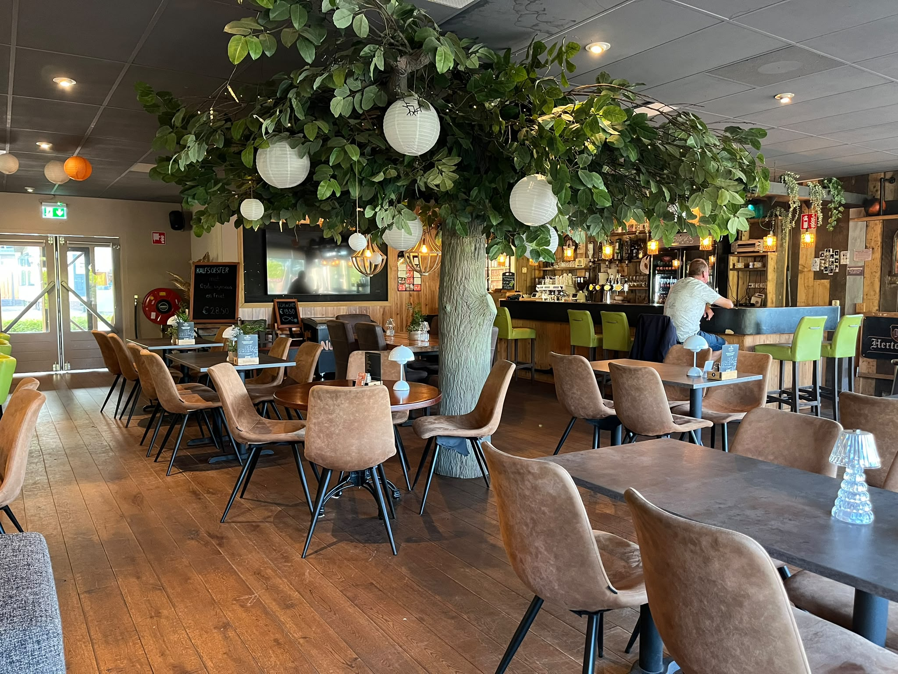
Winter bij Maas en Vrienden
Buiten ligt de sneeuw, binnen branden de lichtjes. Kom lekker opwarmen met iets warms te drinken, een goed glas en een stevige maaltijd.
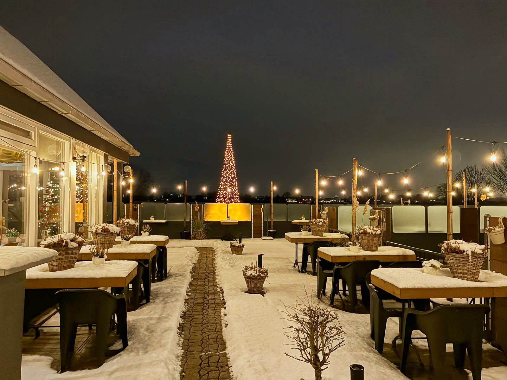
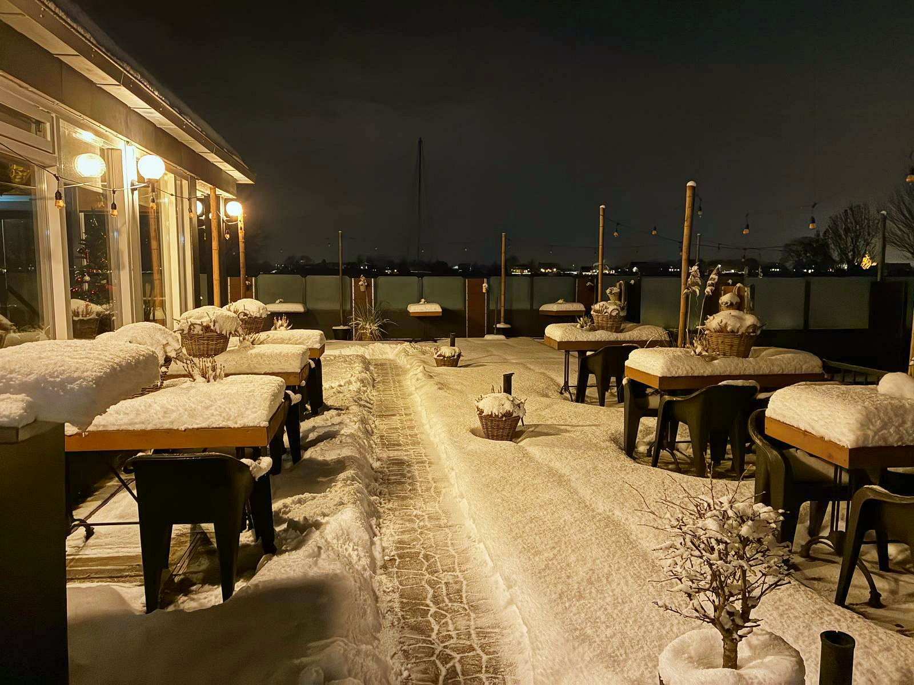
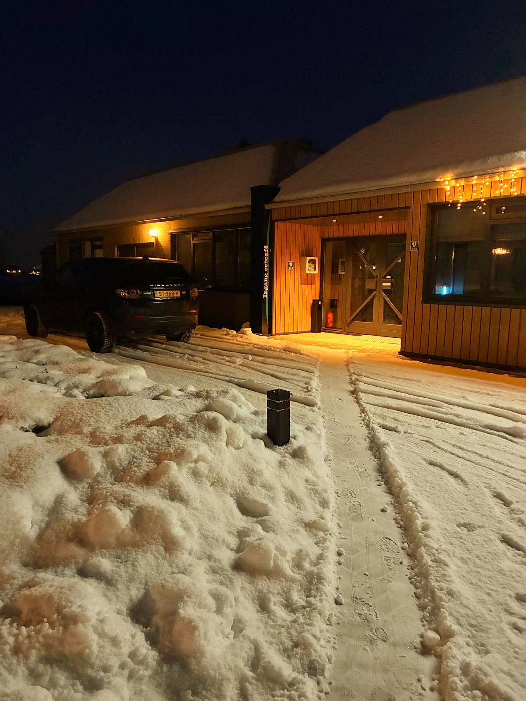
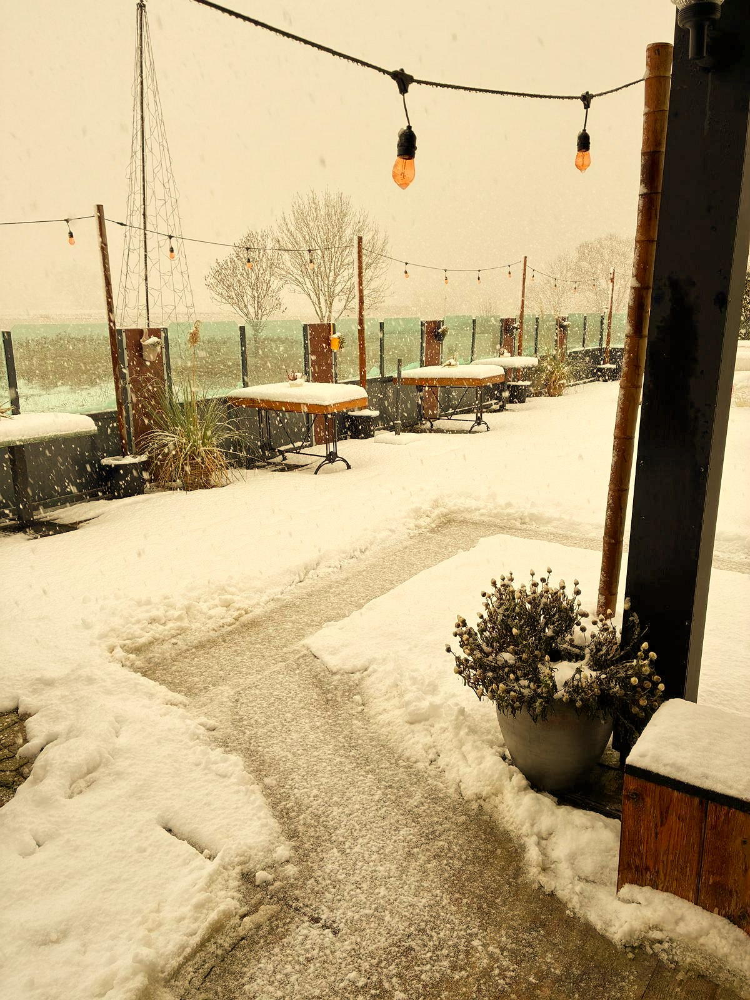
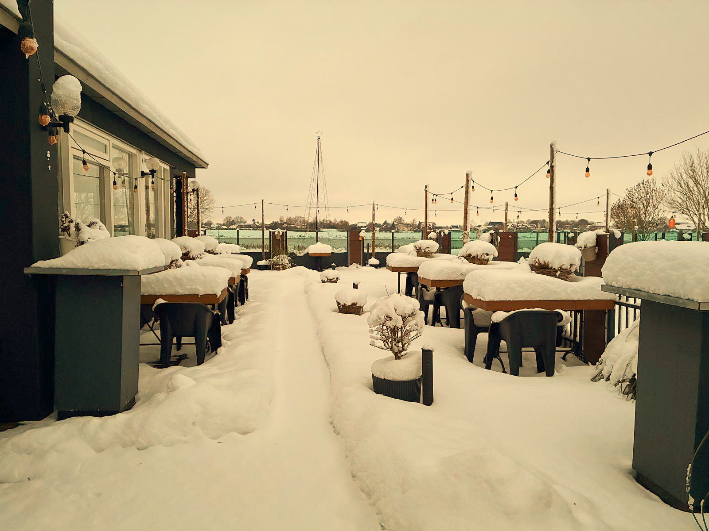
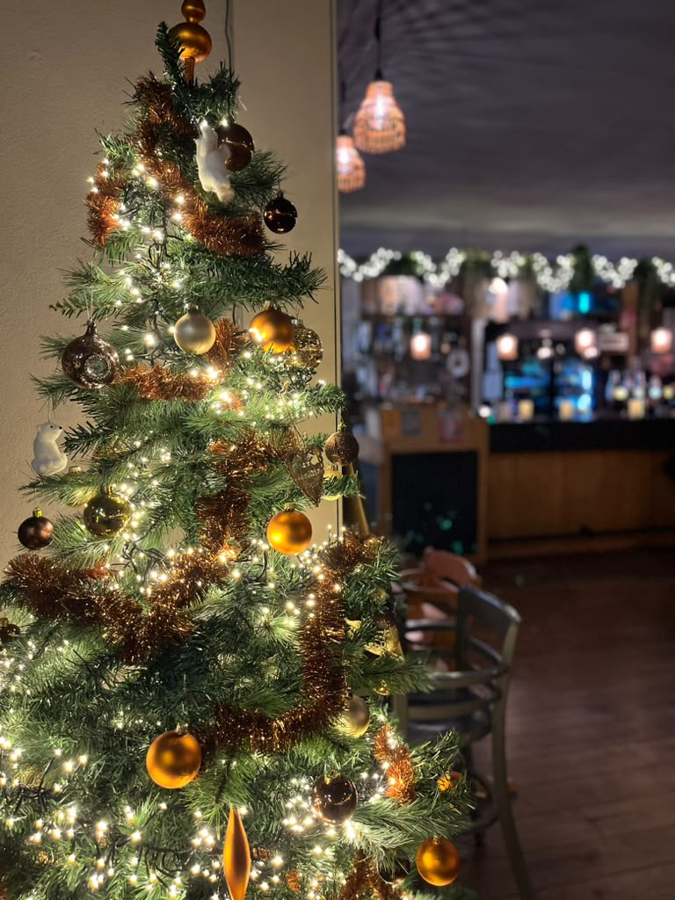
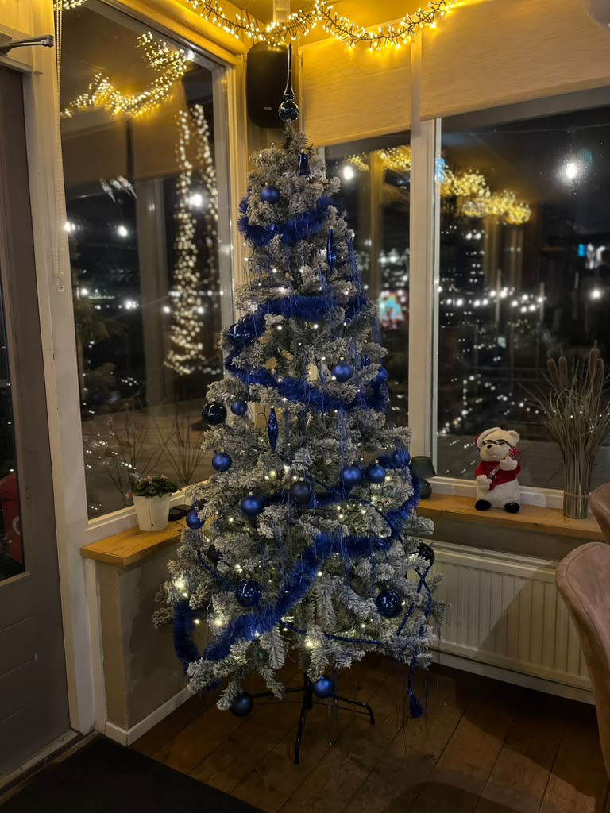
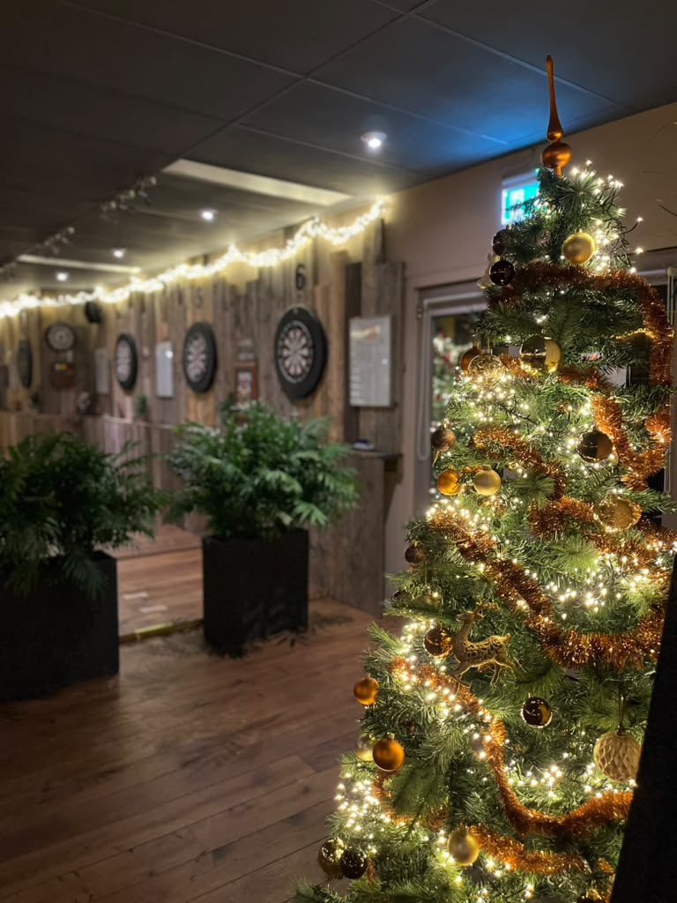
Onze vaste specials
Elke donderdag
Alle pizza's € 12,50. Afhalen kan ook.
Elke zaterdag
Saté voor € 14,50 per persoon.
Aanraders van de chef
Een paar gerechten die we je graag aanraden. Op de menukaart vind je alles, van borrelhapjes tot dessert.
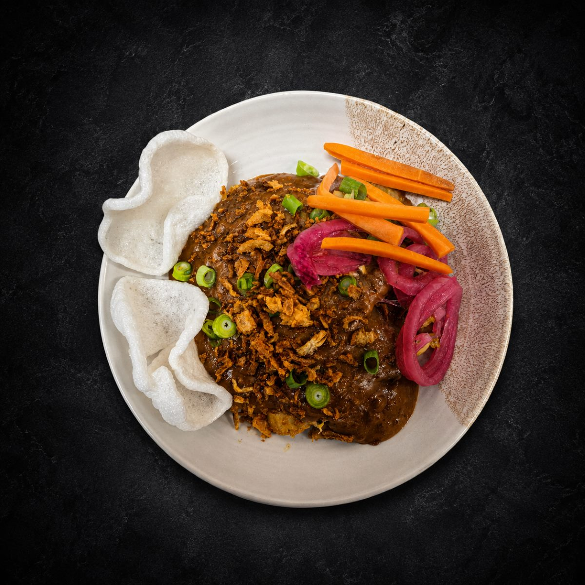
Malse kipfilet aan spies, Indonesisch gemarineerd, satésaus en gebakken uitjes.
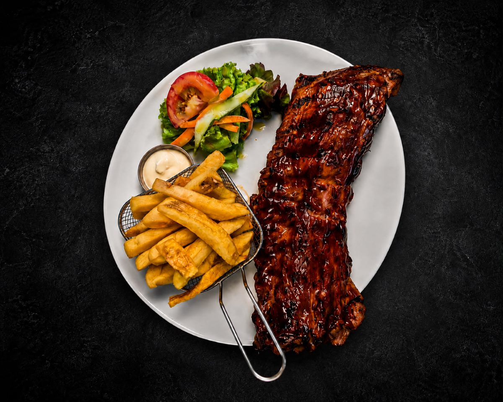
Bereid en gemarineerd door de chef, geserveerd met coleslaw.
Agenda
Speciale avonden, weekspecials en andere momenten om naar uit te kijken.
Op dit moment staan er geen evenementen gepland. Kijk binnenkort nog eens, of volg de evenementenpagina.
Gasten zijn vaak heel positief over ons, en daar zijn we blij mee. Lees de reviews op Google of laat zelf weten hoe je het vond.
Goed om te weten
Goed bereikbaar, makkelijk parkeren en ruimte voor iedereen, ook voor kinderen en honden.
Praktische informatie
Loop gerust binnen of plan je bezoek. Hieronder zie je wanneer we open zijn en hoe je ons vindt.
Reserveren kan tussen 11:00 en 22:00 uur.
Even een stukje rijden
Op zoek naar een gezellig eetcafé, restaurant of café in de buurt? Maas en Vrienden ligt aan de Hoge Maasdijk in Andel, in het Land van Heusden en Altena. Je rijdt zo vanuit Gorinchem, Woudrichem, Zaltbommel, Heusden of Den Bosch naar ons warme eetcafé aan de Maas.
Reistijden met de auto, ongeveer. Parkeren kan gratis bij de deur, dus je staat zo binnen in de warmte.